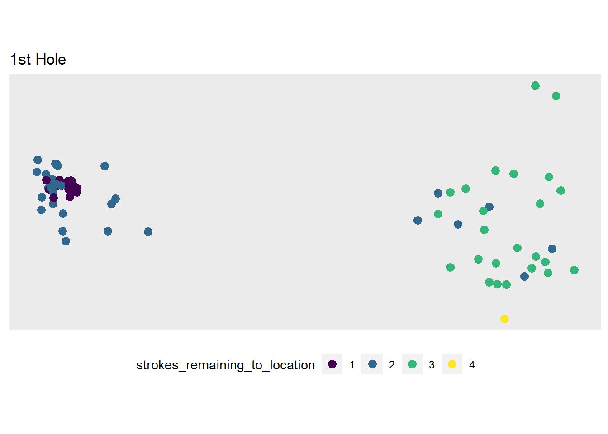
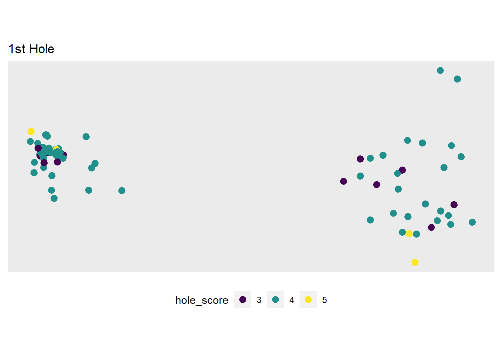
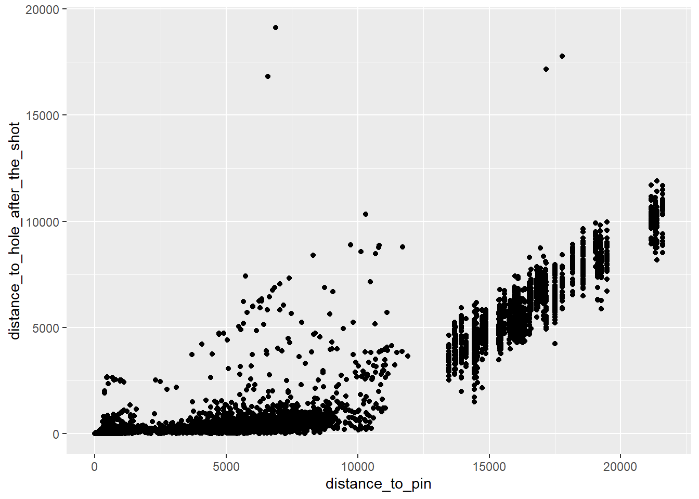
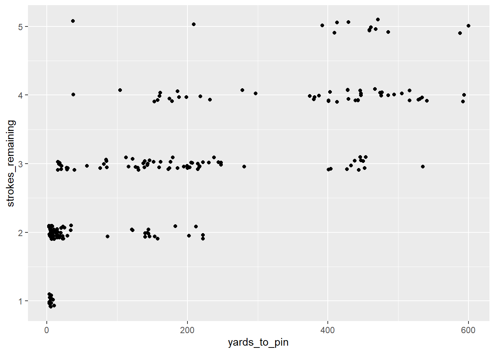

library(tidyverse)shot_level <- readRDS("../02_shotlink_explore/shot_level.rds")
cut_colors <- readRDS("../02_shotlink_explore/cut_colors.rds")
shot_level %>%
filter(player_last_name == 'Haas') %>%
select(player) %>%
distinct() player
1 24924strokes_remaining <- shot_level %>%
group_by(player,
hole,
round) %>%
arrange(player,
round,
hole,
shot) %>%
mutate(strokes_rolling = cumsum(num_of_strokes)) %>%
mutate(strokes_remaining = hole_score - strokes_rolling + 1) %>%
ungroup()
strokes_remaining %>%
filter(player == 21731,
round == 1,
hole %in% 1) %>%
select(hole,
hole_score,
shot,
num_of_strokes,
strokes_remaining)# A tibble: 4 × 5
hole hole_score shot num_of_strokes strokes_remaining
<int> <int> <int> <int> <dbl>
1 1 4 1 1 4
2 1 4 2 1 3
3 1 4 3 1 2
4 1 4 4 1 1strokes_remaining %>%
filter(player_last_name == 'Mahan')# A tibble: 272 × 41
tour_code tour_de…¹ year tourn…² player course perma…³ playe…⁴ playe…⁵ round
<chr> <chr> <int> <int> <int> <int> <int> <chr> <chr> <int>
1 R PGA TOUR 2011 410 24781 688 60 Hunter Mahan 1
2 R PGA TOUR 2011 410 24781 688 60 Hunter Mahan 1
3 R PGA TOUR 2011 410 24781 688 60 Hunter Mahan 1
4 R PGA TOUR 2011 410 24781 688 60 Hunter Mahan 1
5 R PGA TOUR 2011 410 24781 688 60 Hunter Mahan 1
6 R PGA TOUR 2011 410 24781 688 60 Hunter Mahan 1
7 R PGA TOUR 2011 410 24781 688 60 Hunter Mahan 1
8 R PGA TOUR 2011 410 24781 688 60 Hunter Mahan 1
9 R PGA TOUR 2011 410 24781 688 60 Hunter Mahan 1
10 R PGA TOUR 2011 410 24781 688 60 Hunter Mahan 1
# … with 262 more rows, 31 more variables: tournament_name <chr>,
# course_name <chr>, hole <int>, hole_score <int>, par_value <int>,
# yardage <int>, shot <int>, shot_type_s_p_d <chr>, num_of_strokes <int>,
# from_location_scorer <chr>, from_location_laser <chr>,
# to_location_scorer <chr>, to_location_laser <chr>, distance <int>,
# distance_to_pin <int>, in_the_hole_flag <chr>, around_the_green_flag <chr>,
# first_putt_flag <chr>, distance_to_hole_after_the_shot <int>, time <int>, …strokes_remaining %>%
filter(player %in% c(24925, 24924, 24781)) %>%
ggplot(mapping = aes(x = log(distance_to_pin),
y = strokes_remaining,
color = player_last_name)) +
geom_jitter(height = 0.1,
width = 0) +
geom_smooth(method = loess,
se = F)`geom_smooth()` using formula = 'y ~ x'
strokes_remaining %>%
ggplot(mapping = aes(x = strokes_remaining,
y = distance_to_pin/36 )) +
ggbeeswarm::geom_quasirandom() 
strokes_remaining %>%
ggplot(mapping = aes(x = distance_to_pin,
y = distance_to_hole_after_the_shot)) +
geom_point()
strokes_remaining %>%
filter(player == 24924) %>%
mutate(yards_to_pin = distance_to_pin/36) %>%
mutate(log_yards_to_pin = log(yards_to_pin)) %>%
filter(log_yards_to_pin > 1) %>%
# arrange(yards_to_pin) %>%
# select(distance_to_pin, yards_to_pin) %>%
# tail()
ggplot(mapping = aes(x = yards_to_pin,
y = strokes_remaining)) +
geom_jitter(height = 0.1)